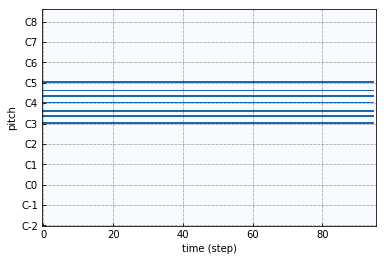

Getting Started¶
Objects¶
The main objects in Pypianoroll are pypianoroll.Multitrack and
pypianoroll.Track objects.
A pypianoroll.Track object is composed of a piano-roll matrix and
additional track information (program number, drum indicator and its name).
A pypianoroll.Multitrack object consists of a list of
pypianoroll.Track objects and additional and multi-track information
(tempo and down beat information and its name).
For more details, see Multi-track Piano-roll and Single-track Piano-roll.
Example¶
(The following example is also available as a Jupyter notebook.)
import numpy as np
from pypianoroll import Multitrack, Track
from matplotlib import pyplot as plt
# Create a piano-roll matrix, where the first and second axes represent time
# and pitch, respectively, and assign a C major chord to the piano-roll
pianoroll = np.zeros((96, 128))
C_maj = [60, 64, 67, 72, 76, 79, 84]
pianoroll[0:95, C_maj] = 100
# Create a `pypianoroll.Track` instance
track = Track(pianoroll=pianoroll, program=0, is_drum=False,
name='my awesome piano')
# Plot the piano-roll
fig, ax = track.plot()
plt.show()
Here’s what the output should look like.
# Extend the piano-roll to demonstrate the usage of down beat array
track.pianoroll = np.tile(track.pianoroll, (4, 1))
downbeats = [0, 96, 192, 288]
# Copy the track to demonstrate the usage of `pypianoroll.Multitrack`
another_track = track.copy()
another_track.program = 24
another_track.name = 'my awesome guitar'
# Create a `pypianoroll.Multitrack` instance
multitrack = Multitrack(tracks=[track, another_track], tempo=120.0,
downbeat=[0, 96, 192, 288], beat_resolution=24)
# Plot the multi-track piano-roll
fig, axs = multitrack.plot()
plt.show()
Here’s what the output should look like.

Here is how saving and loading works. (For more details, see Save & Load)
# Save the `pypianoroll.Multitrack` instance to a .npz file
multitrack.save('./test.npz')
# Load the .npz file to a `pypianoroll.Multitrack` instance
loaded = Multitrack('./test.npz')
And here is how to parse and write MIDI files. Pypianoroll currently supports only MIDI files. (For more details, see Parse & Write)
# Parse a MIDI file to a `pypianoroll.Multitrack` instance
another_multitrack = Multitrack('./test.mid')
# Write the `pypianoroll.Multitrack` instance to a MIDI file
another_multitrack.write('./test.mid')